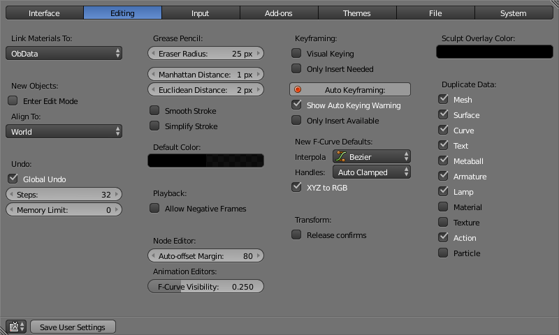

编辑¶
这些选项用于控制相关工具与用户之间的交互方式。

材质关联到¶

以一个网格为例。
为了更好的理解该选项，你首先要弄清楚Blender是怎么计算物体的。在Blender中，几乎一切都被归类到数据块的层级中。可以把数据块当作包含特定信息片段的容器。比如说，物体数据块包含了这个物体的位置信息，而物体数据 "ObData" 数据块则包含其网格信息。
有两种关联材质的方式：

关联到物体数据(左)与关联到物体(右)的材质。
- 对象数据
- 任何新建的材质都将创建为物体数据数据块的一部分。
- 物体
- 何新建的材质都将创建为物体数据块的一部分。
新物体¶
- 进入编辑模式
- 勾选该项，新建物体后自动进入编辑模式。
- 对齐到
- 世界
- 新建的物体对齐到世界坐标系。
- 视图
- 新建的物体对齐到视窗视角。
撤销¶
- 全局撤销
启用后，Blender会保存 非 编辑模式 下执行的操作。比如，复制物体、修改面板设置或者切换模式。
- 步数
- 可以撤销的步数。
- 内存限额
- 允许撤销使用的最大内存限制（0为不限制）。
蜡笔¶
- 擦除半径
- 蜡笔橡皮擦笔刷的半径。
- 曼哈顿点距
- 鼠标在运动轨迹被记录下来之前在上下方向需移动的距离的最小像素值。调低该值可方便绘制曲线。
- 欧几里得间距
- 鼠标在运动轨迹被记录下来之前移动的距离的最小像素值。
- 简化笔触
- 启用后，对笔画进行后处理简化操作，移除接近半数的点。只在绘制非直线时有意义。
- 默认颜色
- 蜡笔图层的默认颜色。
回放¶
- 允许负数帧
- 可使用鼠标或键盘设置时间游标为负帧值。在使用 预览范围 时，可以进行回放。
关键帧¶
在很多情况下，动画是被关键帧控制的。物体的变量数值(例如位置)都记录在关键帧里，Blender会自动在两个关键帧之间生成补间动画。
- 目视插帧
- 对于使用约束的物体，物体的对应属性并没有发生变化。 目视插帧 会根据约束的视觉变换，自动对物体属性添加关键帧，
- 只在必要时插入
- 仅在属性值发生变化时插入关键帧。
- 自动插入关键帧
- 对新场景默认启用 自动插入关键帧 。
- 显示自动插帧警告
- 启用 自动插入关键帧 ，移动物体时，会在 3D视图 右上角显示警告。
- 只在可用曲线上插入
- 只对现有的通道函数曲线添加关键帧。
新建函数曲线的默认值¶
变换操作¶
- 释放为确认
- 拖动
RMB移动物体时，默认需要使用LMB来确认此(或其他)变化操作。勾选此项，松开RMB即为确认变换操作。
造型叠加颜色¶
这个颜色选择器使使用者可以在雕刻模式中，选择一种颜色作为笔刷头标记圈内部的颜色，并且这个带有颜色的内圈以半透明状态叠加在笔刷圈上，代表着笔刷权重的焦点。重叠的颜色只有在 “显示重叠” 这个选项被勾选(点击 小眼睛)的时候才显示。叠加颜色的透明度通过 中的滑块控制。
复制数据¶
这个 复制数据 的系列选项框用于定义当物体被复制时，物体的哪些数据被复制，而哪些数据保持关联。当小方框被勾选的时候，其所代表的数据将随着物体的复制而一同复制出副本。当方框没被勾选的时候，将使用源物体的关联数据。
比如，如果勾选网格，当复制物体时，会随新物体创建网格数据的副本，而且每个副本网格都是独立的。如取消勾选，当修改其中一个物体的网格时，其余副本也会随之被修改。
上述规则适用于 复制数据 列表中所有复选框。